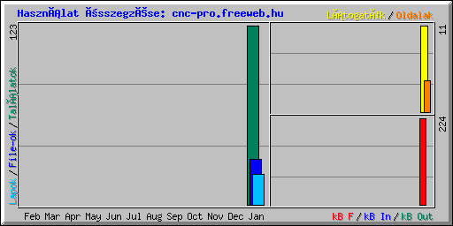

| Havi összefoglalás | ||||||||||||
|---|---|---|---|---|---|---|---|---|---|---|---|---|
| Hónap | Napi átlag | Havi összegzés | ||||||||||
| Találatok | File-ok | Lapok | Látogatók | Oldalak | kB F | kB In | kB Out | Látogatók | Lapok | File-ok | Találatok | |
| Jan 2012 | 41 | 10 | 7 | 3 | 4 | 224 | 0 | 0 | 11 | 21 | 31 | 123 |
| Összegzés | 224 | 0 | 0 | 11 | 21 | 31 | 123 | |||||
| Generated by Webalizer Version 2.01 |